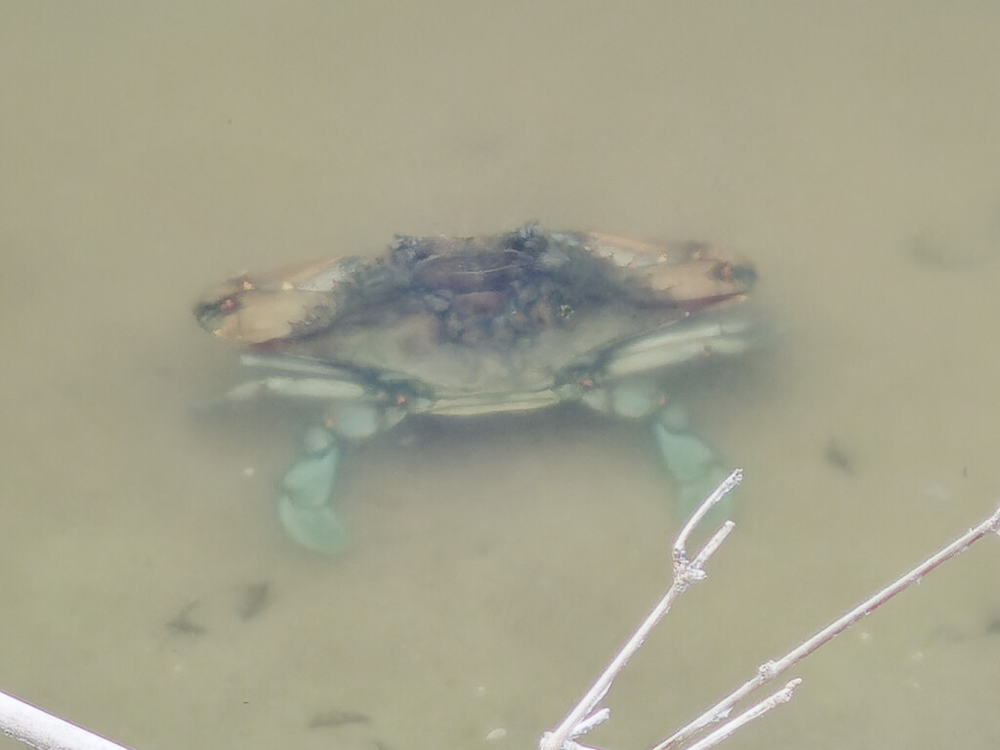

- A swimming crab with sapphire-blue claws turning up in a park pond is the Atlantic blue crab — and its presence is a clue that the water is brackish, not pure fresh.
- Its scientific name, Callinectes sapidus, means "savory beautiful swimmer," and it lives up to all three words.
- The back pair of legs are flattened into paddles, letting it swim sideways through the water rather than only crawl.
- Tip for telling males from females: females have red-tipped claws, often described as wearing "painted fingernails."
Olive to grayish body with bright blue legs and claws; mature females have red-tipped claws.
Strong pincers, blue in males, red-tipped in females.
Flattened into swimming paddles.
Broad, with a sharp spine on each side.
Silent.
A broad crab with blue-tinged claws and paddle-shaped back legs in or near the water. Red-tipped "painted" claws mark a female; all-blue claws mark a male.
An omnivore — clams, snails, small fish, plants, detritus, and dead animals — scavenged and hunted along the bottom.
In and around the ponds if the water carries any brackish influence. Scan the shallows and edges for a crab with blue claws.
Possible whenever conditions suit; most active in warm water.
Look, do not touch. Give it room at the water's edge and do not handle it; those claws mean business.
- © Brice C. (CC-BY-NC), via iNaturalist